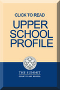
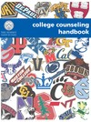
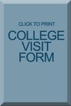

College Counseling
Meeting Each Student's Needs
The Summit’s College Counseling Office focuses on supporting, informing and encouraging students and their families as they navigate the exciting, complex and ever-evolving world of college admissions and financial aid.
Whether your child is:
- An athlete
- An expatriate
- An accelerated learner
- Gifted in arts
- Or has special considerations
 We meet the needs of each and every child. We educate students and families about the nuances of admissions, advise high school students about appropriate and interesting college and post-secondary options that best suit their specific needs, and support and encourage students as they successfully complete the application process.
 We offer The Summit community prior professional experience as college counselors, college admission officers, College Counseling Handbookas well as college support staff. This background enables the counseling staff to provide valuable and timely advice to families and to help students present their abilities, talents and experiences to the colleges and universities in the most appropriate manner. Over the course of their Summit careers, families and students receive information through The Summit's College Counseling Planning Calendar, specific mailings and emails, class-wide meetings and parent programming.
Freshman Year: Freshmen are counseled to take challenging courses, explore academic and extracurricular interests, develop good time management and study skills and plan worthwhile summer activities, such as college programs, volunteer work, a specialty focused camp or a summer job. Freshmen should take the PLAN test in the spring and, when applicable, SAT Subject Test Math Level 1 after Algebra II.

Sophomore Year: Sophomores should look for opportunities to take leadership roles in school and in the community as they begin building their resumes in Naviance. Sophomores should take the PSAT in October, take AP exams any courses taken at the AP level and take appropriate SAT Subject tests.
Junior Year: Juniors begin a series of college-related standardized testing, as well as start a self-reflective process with their counselor in preparation for college research. Students are encouraged to visit colleges during spring and summer vacations, attend on-campus and local college fairs, and meet individually with the college counselor to discuss their goals and aspirations. Students and the college counselor work together to develop a list of options for active research and consideration, while keeping an eye on the realities of their college admissions prospects.
Senior Year: Seniors work with the college counselors to develop final lists with an eye for fit and selectivity balance, and begin to focus on the final aspects of the application process. Over 100 college admissions officers visit The Summit annually to meet with groups of interested students and/or to conduct individual interviews. Students are encouraged to devote considerable energy to their application essays as they refine their self-presentation, and to make thoughtful decisions about the many exciting opportunities available to them in higher education. Through the middle of the senior year the college counselor and the students work in concert to create a college list that comprehensively connects to the students’ personal attributes, supports their intellectual endeavors, and will provide them with exciting options for undergraduate study.
The college process at The Summit is designed to be an extension of the overall education taking place in the classroom, on the athletic fields, in the art studio and in any venue on-campus where faculty have the opportunity to teach Summit students. Seniors leave with a sense of satisfaction for what they have accomplished while at The Summit, along with a healthy dose of enthusiasm for the possibilities in front of them in the years to come.
The buttons to the right will link you to valuable college search internet resources as well as to the calendar of college visits by college admissions officers to The Summit.